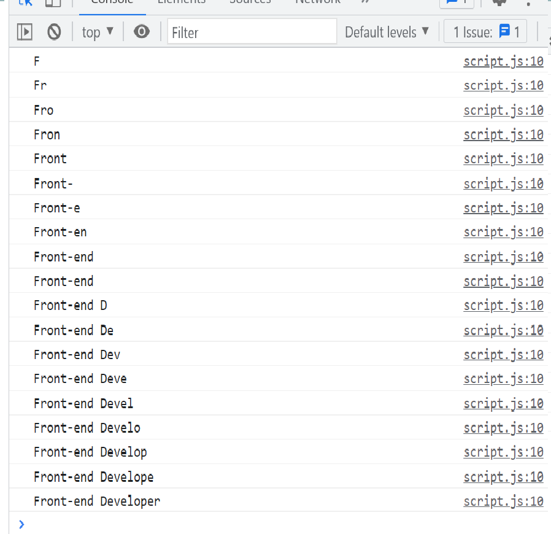

Write a code that takes the age in years and returns the age in days.
Use 365 days as the length of a year for this challenge.
function calcAge(age) {
return (
//write your code here
)}
// result:
// console.log(calcAge(65)); // 23725
// console.log(calcAge(0)); // 0
// console.log(calcAge(20) ); //7300
Try to get this look in console. Using for loop and max 8 lines code.
console result:
Use for loop, 10 is not enter this sum.
console result
Use for loop, 17 is not enter this multiplication.
Use for loop, 10 and 18 enter this multiplication.
console result
Use for loop, 17 and 30 enter this sum.
console result
Use while loop, and if/else then subtract them each other
console result
Use for loop, 16 is enter this list.
console result